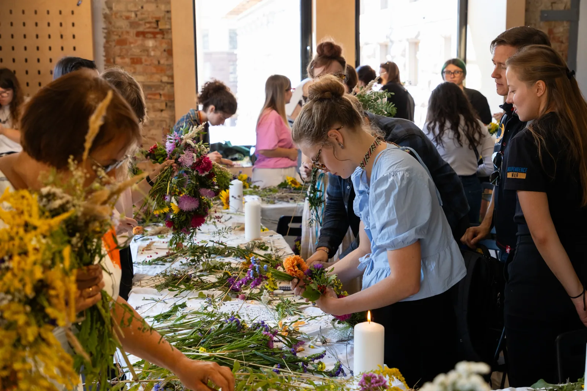

Ритуал подяки, пошани та памʼяті. Символічна обʼєднавча дія, відкрита для широкого кола суспільства: зберігати памʼять про війну і спільну боротьбу за незалежність.
Благодійний освітньо-музичний фестиваль памʼяті Ірини Цибух. Створений родиною та друзями Іри ЧЕКИ. Щорічний — у зручних датах біля 1 червня, дня її народження.
Церемонія, коли державний символ завершує службу — і ми визнаємо це з повагою. Коли прапор зношується й втрачає вигляд, постає питання: що робити далі?
Публічне прощання з військовим — спосіб вшанувати людину й подякувати за службу. Прощання з містом — остання зустріч загиблого з громадою; особливо важлива для родини.
Загальноукраїнський проєкт ГО «Вшануй»: вшанування памʼяті загиблих Захисників і Захисниць та підтримка родин полонених і зниклих безвісти. Тактовне нагадування про ціну умовно спокійного життя.
Проєкт координаторок «Вшануй» у Полтаві. Місце, де кожен може залишити імʼя людини, яку вбила росія, — щоб вона була видимою у просторі міста.

29 серпня 2026-го, у День памʼяті загиблих, ми відновлювали традицію вінкування. Родини та друзі плели вінки з живих квітів під розповіді про найщасливіші моменти полеглих.
Це виставка про мить, коли щодня о 9:00 ми зупиняємося, щоб згадати тих, кого вже немає поруч.